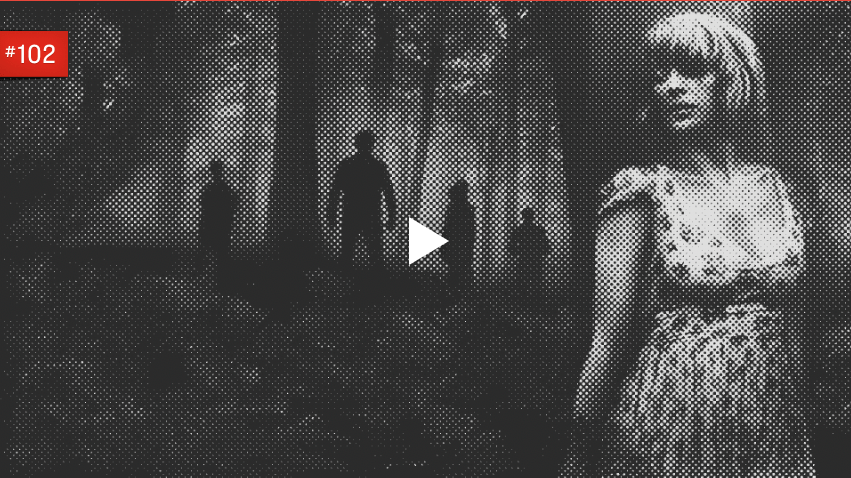

Eden Lake (2008)
Directed by James Watkins
I originally discovered Eden Lake when I was researching films in the New French Extremity movement. While Eden Lake doesn’t belong to this movement — it isn’t “extreme” or French — I would say it’s definitely New French Extremity adjacent. Interestingly enough, I remember the film being pretty brutal, but upon a re-watch I found much of the violence in the film is implied and not explicit. Many of the more difficult scenes show only a few frames of the violence and leave you to fill in the blanks, or you can hear what’s going on but can’t actually see anything. My husband Michael and I did show this film to a close friend once. We were in a literal cabin in the woods outside of Asheville, North Carolina, which should by all intents and purposes heighten the effects of any good Horror film, but it wasn’t to be. We were sitting on a super itchy couch that in fact turned out not to just be itchy, but infested with fleas. We didn’t realize until the movie was over, but sitting there scratching away for two hours made it difficult to really enjoy the movie. We loved it as much as the first time, and our friend didn’t like it at all. I’m gonna blame the fleas.